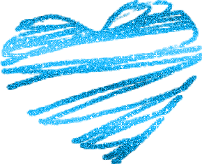
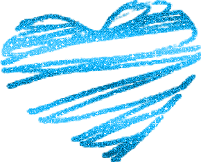

quiero que sepas que es esa sonrisa la que me alegra el día, que son esos ojitos los que hacen iluminar los míos, que es esa carita la que me ilumina la vida, la paz que me da tu piel y todo lo que siento cuando estoy cerca de ti. Cómo me gusta tu carita durmiendo, cómo me emociono con cada regalo o cómo disfruto de esas horas de llamada cuando no puedo estar junto a ti. Mi ilusión al dormir contigo y al despertarme junto a ti, las ganas de estar a todas horas contigo o cómo a veces me quedo mirándote embobada. Cómo me encantan tus gustos y cómo disfruto contigo, y es que te amo y sé que a veces me equivoco y te hago daño, pero te juro que intento hacer lo imposible para verte siempre feliz. Me duele muchísimo ver tu carita seria o triste; tú no te mereces eso, no te mereces nada malo. Puedo cambiar y lo sé, no quiero seguir haciendo daño al niño que me ama con locura, que me apoya en todo, me ayuda a salir adelante y está ahí siempre conmigo. Me encanta tu forma de ser con los niños y también tus sueños y tus metas. Me encanta todo de ti, eres mi niño perfecto, te lo juro, y cuando tú estás a mi lado mis días nublados se vuelven soleados, y si no, haces que siempre sean divertidos. Me imagino todo un futuro contigo: nuestra casa, nuestros coches, nuestros trabajos, nuestros hijos, nuestras mascotas... nuestro todo, y me propongo conseguirlo. Haré lo imposible para conseguir ese sueño junto a ti. Sé que solo tengo 15 años, pero no quiero nada que no sea contigo. Te amo mi niño.
 
